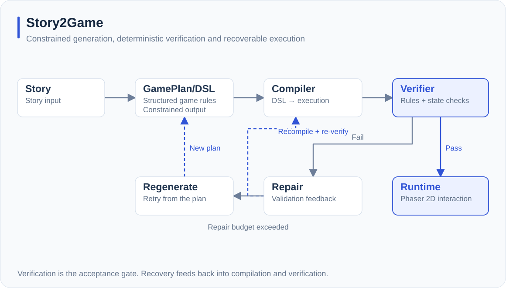
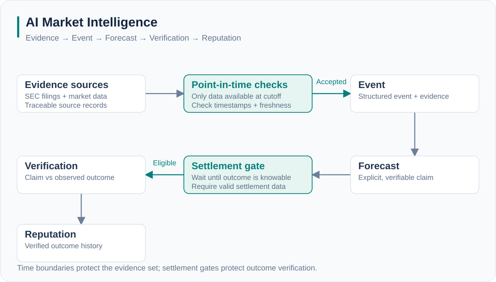
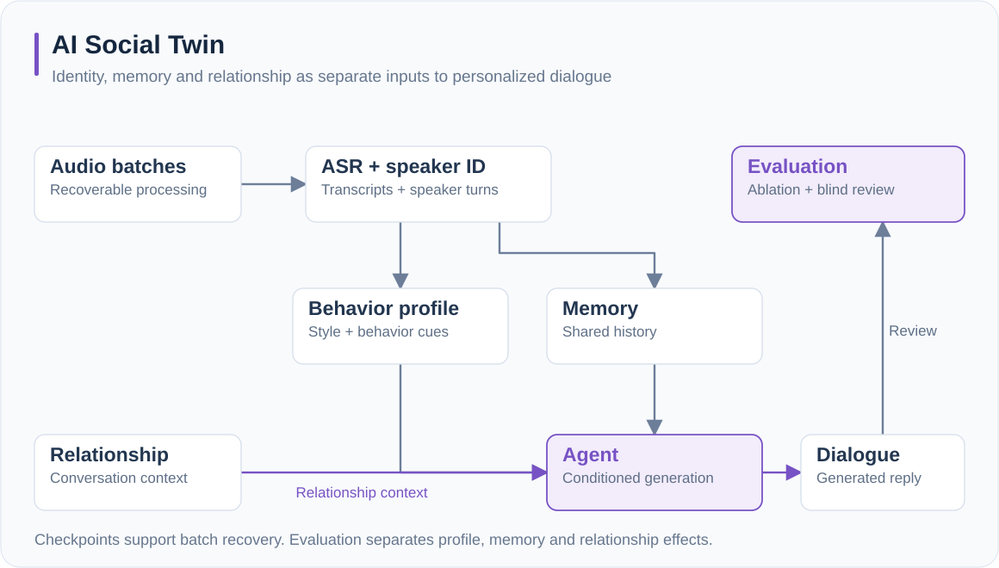

Story2Game
让故事成为可执行的世界From stories to executable worlds
通过约束与确定性验证，让故事生成结果可执行。Use constraints and deterministic verification to make generated stories executable.
首个核心任务是“故事到可玩样例”。将复杂编辑和多模态素材延后，优先验证生成结果能否运行、失败后能否恢复。Start with story-to-playable. Defer complex editing and multimodal assets to focus on executable results and recovery.
Agent PipelineDSLPhaser
阅读项目详情Read the case study
需要解决的问题The problem
开放式故事生成容易产生无法执行的规则和不一致的状态。目标是让创作者从故事出发，得到可运行的游戏。Open-ended generation can produce invalid rules and inconsistent state. The goal is a runnable game built from a creator’s story.
我的工程贡献My contribution
设计 GamePlan 与结构化 DSL，连接编译器和确定性运行时；构建 Repair、Regeneration 与 Re-verification；实现 Phaser 2D 交互切片。Designed the GamePlan and structured DSL, compiler and deterministic runtime; built repair, regeneration and re-verification; implemented a Phaser 2D interaction slice.
关键设计取舍Design trade-off
用受约束的 DSL 换取可执行性；验证通过后才接受结果，而非依赖模型的自我判断。Trade unrestricted output for an executable DSL. Accept results through validation rather than model self-assessment.
产品视角Product perspective
首个核心任务是“故事到可玩样例”。将复杂编辑和多模态素材延后，优先验证生成结果能否运行、失败后能否恢复。Start with story-to-playable. Defer complex editing and multimodal assets to focus on executable results and recovery.
已实现生成与验证链路，以及 Phaser 2D 交互切片。Generation, verification and a Phaser 2D interaction slice are implemented.

AI Market Intelligence
让 AI 判断有证据、有时间边界Evidence and temporal integrity for AI
保持证据可溯源、时间一致，并在条件满足后验证判断。Trace evidence, preserve temporal integrity and verify claims when outcomes are knowable.
把用户任务定义为理解证据与判断可靠性；通过只读结果和来源追溯建立可信度，避免把预测包装为收益承诺。Focus on understanding evidence and reliability through read-only results and source tracing, without presenting predictions as promised returns.
FastAPIPostgreSQLPoint-in-Time
阅读项目详情Read the case study
需要解决的问题The problem
模型输出观点很容易，确认它在当时使用了什么证据、后来如何验证更难。Generating a forecast is easy; tracing what was known at the time and verifying the outcome is harder.
我的工程贡献My contribution
设计 Evidence → Event → Forecast → Verification → Reputation 链路，接入真实行情与 SEC 数据，实现 PIT、结算门控与回归验证。Built the evidence-to-verification pipeline, integrated market and SEC data, and implemented point-in-time checks, settlement gates and regression verification.
关键设计取舍Design trade-off
宁可明确返回证据不足或等待数据，也不以过期行情或未来信息生成看似完整的结论。Explicitly return insufficient evidence or await data rather than use stale prices or future information.
产品视角Product perspective
把用户任务定义为理解证据与判断可靠性；通过只读结果和来源追溯建立可信度，避免把预测包装为收益承诺。Focus on understanding evidence and reliability through read-only results and source tracing, without presenting predictions as promised returns.
已实现证据与验证链路、时间边界检查和结算门控。Evidence and verification pipeline with point-in-time checks and settlement gates.

AI Social Twin
个性化，不止一种说话风格Personalization shaped by relationships
区分人设、记忆与关系，验证各自对个性化对话的贡献。Separate profile, memory and relationship; evaluate their contribution to dialogue.
以熟人交流为探索场景，重点验证身份风格和关系感知；真实语音与私人对话不作为公开展示素材。Explore familiar-person interactions, evaluating identity and relationship sensitivity while keeping private conversations and voices out of public demos.
MemoryRelationshipEvaluation
阅读项目详情Read the case study
需要解决的问题The problem
统一的人设提示难以表达同一个人面对不同朋友时的互动差异。A single persona prompt misses how one person communicates differently across relationships.
我的工程贡献My contribution
设计语音处理、说话人识别、行为特征、记忆与生成链路；实现分批处理和 checkpoint 恢复；构建消融与盲评框架。Designed speech processing, speaker identification, behavior profiles, memory and generation; implemented checkpoint recovery and ablation/blind evaluation.
关键设计取舍Design trade-off
区分人设、记忆与关系的贡献；长音频分批处理，避免一次失败导致全量重算。Separate the contributions of persona, memory and relationship; process long audio in batches to support recovery.
产品视角Product perspective
以熟人交流为探索场景，重点验证身份风格和关系感知；真实语音与私人对话不作为公开展示素材。Explore familiar-person interactions, evaluating identity and relationship sensitivity while keeping private conversations and voices out of public demos.
个性化对话原型，包含批处理恢复与消融、盲评框架。Personalized dialogue prototype with batch recovery and ablation/blind evaluation.